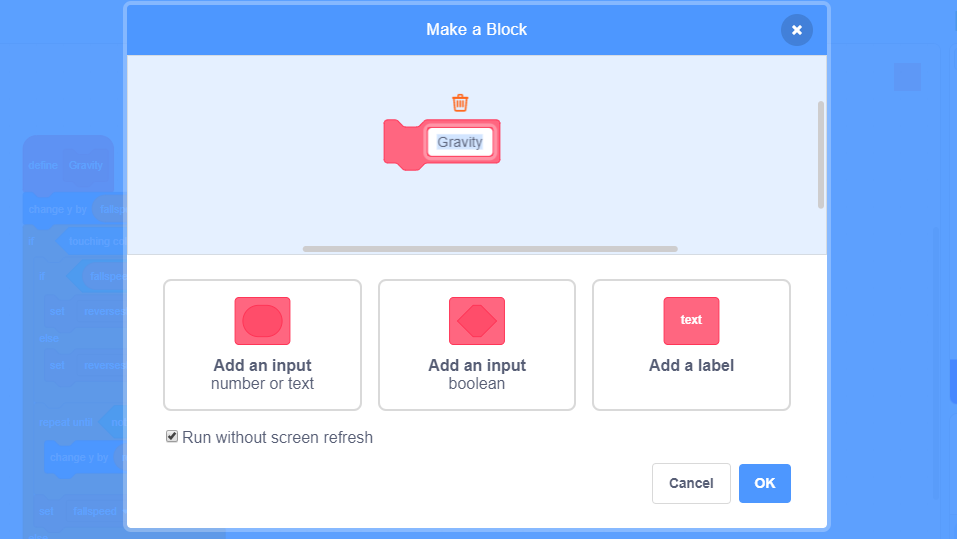
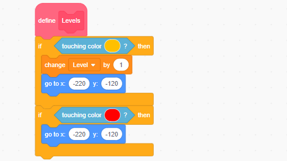
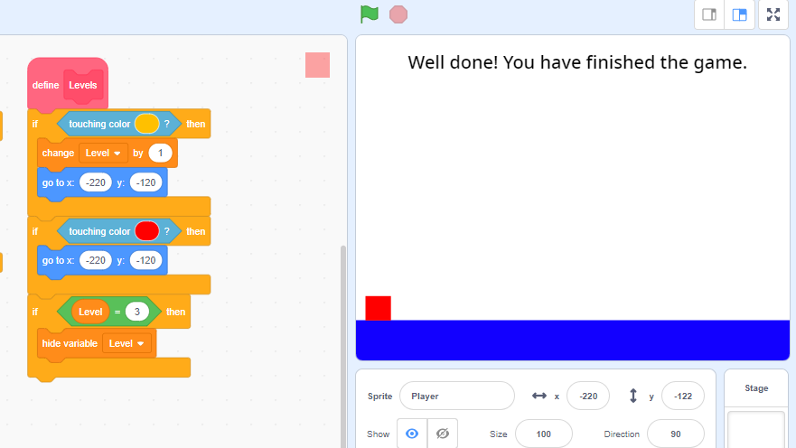

Our gravity script is slowing the whole thing down. Although it's doing it's job, it's taking a bit of time to do it. We need a way to skip the movement and get straight to the result of the movement. Luckily for us, scratch has just the thing we need!
First, left-click on the 'define Gravity' block. Then select edit, and check the 'Run without screen refresh' box. This will tell scratch to make the calculation without refreshing what we can see on the screen. This makes everything a lot faster! Click 'OK', then try your game out.

There's not much left to do! We need to tell scratch what to do if we touch the color red or yellow.

If we touch yellow, change the level by 1 and go back to the start position. If we touch red, go back to the start position but don't change the level! Finally, we want the level variable to hide when the level is equal to 3 (or wherever your well done message is if you add more levels).

Ta da! We're done! Play your game, show it off to your friends, and add more levels! As a chllenge, try adding more colors into the game. For instance, try creating a green bouncepad!
Hint: Try using the jumping code but changing fallspeed to takeoffspeed x 2 instead!